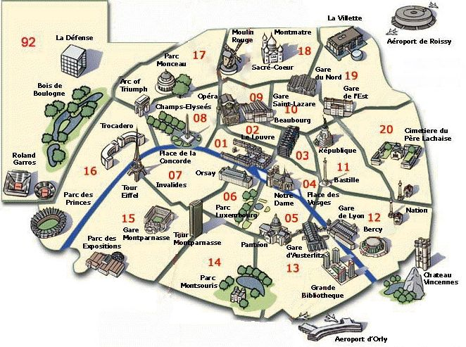

Carte de Paris
Plan touristique

La ville de Paris renferme de nombreux sites touristiques intéressants, ce qui explique d'ailleurs sa forte réputation. Pour découvrir toutes ses richesses patrimoniales, il est conseillé d'avoir à sa disposition une carte de la ville permettant de prendre la bonne direction. Pour cela, il faut se rendre à l'Office du Tourisme ou en télécharger une en ligne.
Il existe plusieurs types de cartes comme le plan de la ville et la carte routière qui donnent diverses adresses comme l'emplacement des monuments, des sites touristiques, des lieux d'hébergement et de restauration, etc. Grâce à une carte, vous ne raterez aucun site touristique comme la Tour Eiffel, les Champs Elysées ou encore l'Arc de Triomphe. Pour visiter la Tour Eiffel par exemple, prenez le RER C pour rejoindre la gare à Champ de Mars-Tour Eiffel, puisque ce monument se trouve au nord-ouest du Champ-de-Mars.
Pour accéder à la ville, on peut passer par l'un de ses trois aéroports dont Charles de Gaule, qui est relié au centre-ville par le RER en 1h30. Il y a aussi l'aéroport d'Orly, à 25 min du centre de Paris. Il y a également l'aéroport de Beauvais, qui est relié au centre-ville par 8 lignes de train par jour. Coût des transports en commun parisiens.
- Métro :
Un billet unique coûte 1,70 euros, il est plus économique d'acheter un carnet de dix tickets pour 12,70 euros, ce qui baisse le prix du billet à 1,27 euros. (carnet enfants : 6,35 euros).
Un ticket est valable 1h30, il permet d'emprunter un métro, un RER, un bus ou un tram, par contre vous ne pourrez faire de transfert qu'entre le métro et le RER, et entre le bus et le tram.
Imaginons que vous devez prendre un métro et ensuite un bus, vous devrez alors acheter deux tickets.
Des tickets journaliers, hebdomadaires, ou mensuels sont également disponibles. Le prix varie selon les zones, le moins cher de ces tickets est le ticket pour un jour appelé Mobilis, il est valable pour les zones 1-2 et coûte 6,40 euros.
Les laissez-passer hebdomadaires et mensuels sont appelés Navigo.
- Naviguo Semaine : 19,15 euros pour les zones 1-2.
- Navigo Mensuel : 62,90 euros pour les zones 1-2
- RER :
Un billet de ticket de métro normal peut être utilisé dans Paris (zone 1), en dehors de la zone 1 les tickets sont plus chers et leur prix varie selon la distance.
Ne vous faites pas avoir en prenant un ticket de métro simple pour vous rendre aux aéroports, tous les jours des touristes se retrouvent bloquer aux tourniquets de sorties du RER parce qu'ils n'ont pas le bon ticket.
- Bus:
Le bus utilise les mêmes tickets que le métro, le ticket plein tarif coûte 1,70 euros, il est valable 90 minutes et permet un changement vers un autre bus ou vers un tram (mais pas vers le métro ou le RER). Comme pour le métro il est possible d'utiliser un Pass Navigo mensuel ou hebdomadaire, ou bien encore un ticket journalier. Et comme pour le métro il est plus économique d'acheter un carnet de dix tickets pour 12,70 euros, ce qui baisse le prix du billet à 1,27 euros. (carnet enfants : 6,35 euros).
Fait par Elisa, Laure, Clara
27/11/2017